ВЕДОМСТВЕННЫЕ СТРОИТЕЛЬНЫЕ НОРМЫ
МОНТАЖ СОСУДОВ И
АППАРАТОВ
КОЛОННОГО ТИПА
ВСН 351-88
Минмонтажспецстрой СССР
Министерство монтажных и специальных
строительных работ СССР
Москва 1988
РАЗРАБОТАНЫ Гипронефтеспецмонтажем Минмонтажспецстроя СССР
(В.Я. Канцель, канд. техн. наук Э.Я. Гордон, В.С. Европин)
ВНЕСЕНЫ Главнефтемонтажем Минмонтажспецстроя СССР
(К.И. Гонитель)
ПОДГОТОВЛЕНЫ К УТВЕРЖДЕНИЮ
Главным техническим управлением Минмонтажспецстроя СССР
С введением в действие ВСН 351-88 утрачивают силу ВСН 351-75
|
Министерство монтажных и специальных строительных работ СССР (Минмонтажспецстрой СССР) |
Ведомственные строительные нормы |
ВСН 351-88 |
|
|
Минмонтажспецстрой СССР |
|||
|
Монтаж сосудов и аппаратов колонного типа |
|||
|
Взамен ВСН 351-88 ММСС СССР |
Требования настоящих норм необходимо выполнять при разработке проектов производства работ, производстве и приемке работ по монтажу сосудов и аппаратов колонного типа* независимо от их технологического назначения, изготовленных из углеродистых, легированных и двухслойных сталей, чугуна, цветных металлов, титана и его сплавов со сварными корпусами или выполненными из царг, соединенных на фланцах.
* Сосуды и аппараты колонного типа в дальнейшем «аппараты».
Нормы не распространяются на монтаж аппаратов с установленными в них внутренними подвижными устройствами (мешалками, центрифугами и т.д.).
1. ОБЩИЕ ПОЛОЖЕНИЯ
1.1. Монтаж аппаратов следует производить в соответствии с проектом производства работ (ППР), положениями настоящих норм, требованиями основных нормативно-технических документов (приложение 1), утвержденных в установленном порядке, а также технической документацией предприятий-изготовителей по конкретным видам и типам аппаратов.
1.2. Подъем собранных испытанных аппаратов в проектное положение должен производиться с технологическими обвязочными трубопроводами, металлоконструкциями обслуживающих площадок, теплоизоляцией и другими покрытиями, не мешающими проведению подъема.
1.3. Работы по монтажу аппаратов необходимо выполнять силами специализированных монтажных подразделений (бригад, участков и т.д.).
1.4. При выборе грузоподъемных средств и расчетах такелажной оснастки для различных схем подъема следует учитывать действие динамических нагрузок и возможную неравномерность распределения нагрузок, используя коэффициенты, приведенные в приложении 2. При выборе грузоподъемных кранов коэффициент динамики не учитывается.
|
Внесены Главнефтемонтажем Минмонтажспецстроя СССР |
Утверждены
Минмонтажспецстроем СССР |
Срок введения
с |
2. ВЫБОР МЕТОДА МОНТАЖА АППАРАТОВ
2.1. Метод монтажа аппаратов выбирается в зависимости от их характеристик (масса, габариты и конфигурация), высотной отметки установки, применяемых грузоподъемных средств*, размеров и конфигурации фундамента, конкретных условий монтажной площадки и компоновки объекта монтажа.
* К грузоподъемным средствам относятся грузоподъемные машины (краны и т.д.), подведомственные Госгортехнадзору, и такелажные средства (мачты, порталы, монтажные полиспасты, различные приспособления и т.д.), не подведомственные Госгортехнадзору.
Методы монтажа
Черт. 1
2.2. Монтаж аппаратов выполняется методами, приведенными на черт. 1.
2.3. Монтаж аппаратов методом скольжения с отрывом опоры аппарата от земли является наиболее простым и производительным и применяется при наличии соответствующих грузоподъемных средств.
2.4. При недостаточных грузовысотных характеристиках грузоподъемных средств необходимо использовать методы поворота вокруг шарнира или скольжения без отрыва опоры аппарата от земли.
Примечание. Использование методов поворота вокруг шарнира определяется возможностью нагружения фундамента.
2.5. Подъем аппаратов в проектное положение может выполняться с помощью различных грузоподъемных средств:
одним или несколькими монтажными стреловыми самоходными кранами;
одной или несколькими мачтами, в том числе мачтово-стреловым подъемником;
портальными подъемниками;
башенными кранами, в том числе с дополнительными устройствами типа «стрела-подпорка»;
шеврами;
гидравлическими подъемниками;
подъемными средствами, установленными на ранее смонтированных конструкциях;
вертолетами;
другими средствами, в том числе эксплуатационными (мостовыми кранами т.д.).
2.6. При наличии грузоподъемных кранов, паспортная грузоподъемность которых не обеспечивает монтаж аппаратов, допускается использовать эти краны в режиме временного увеличения их грузоподъемных характеристик за счет:
расчаливания стрел, в том числе маневренного;
ужесточения требований к площадке установки кранов;
наклона грузового полиспаста под стрелу;
соединения стрел двух кранов ригелем;
опирания стрелы на стойку (шевр) и т.д.
2.7. При монтаже аппаратов следует предусматривать взаимное расположение грузоподъемных кранов и поднимаемого аппарата, обеспечивающее:
минимальный вылет крюка крана в процессе подъема и установки аппарата;
максимально допустимый вылет крюка в начальном положении аппарата при подъеме с последующим его уменьшением;
минимальное возможное отклонение грузового полиспаста от вертикали, особенно из плоскости подвеса груза, о учетом требований инструкции по эксплуатации крана;
наименьшую длину пути передвижения крана с грузом и расположение стрелы предпочтительно вдоль направления перемещения;
расстояние между стрелой крана и выступающими частями аппарата не менее 0,5 м с учетом возможного раскачивания;
минимальное совмещение крановых операций, особенно при спаренной работе кранов;
при спаренной работе поочередное передвижение одного крана и поворот стрелы с изменением вылета другого крана.
На циклограмме подъема аппарата методом скольжения должны быть представлены значения перемещений опорной части аппарата в зависимости от величины перемещения места строповки, а также очередность рабочих операций кранами, обеспечивающих возможное отклонение грузовых полиспастов в допустимых пределах.
На циклограмме подъема аппарата методом поворота вокруг шарнира должны быть указаны величины перемещений места строповки и соответствующее положение оси аппарата относительно горизонтали в начале и конце каждого цикла, очередность выполнения рабочих операций кранами, обеспечивающих возможное отклонение грузовых полиспастов в допустимых пределах.
2.9. Такелажные средства следует применять только в тех случаях, когда невозможно или нецелесообразно использование грузоподъемных кранов.
2.10. Установка такелажных средств и их расположение относительно поднимаемого аппарата должны обеспечивать:
создание минимальных нагрузок на вантовые системы;
минимальное изменение положений такелажного средства, особенно при переводе его через вертикаль;
минимально допустимое приближение аппарата к конструкции средства, но не менее 0,5м.
2.11. При необходимости контроля за величинами допускаемых отклонений грузовых полиспастов такелажных средств в ППР следует разрабатывать циклограммы выполнения работ в соответствии с п.2.8.
3. ОРГАНИЗАЦИЯ И ПОДГОТОВКА МОНТАЖНЫХ РАБОТ
3.1. Общие указания
3.1.1. Организация и подготовка к производству монтажных работ должны осуществляться в соответствии с требованиями раздела 2 СНиП 3.05.06-4 и дополнительными требованиями настоящего нормативного документа.
3.1.2. Все работы, связанные с подготовкой аппаратов и грузоподъемных средств к монтажу, следует выполнять на специальной площадке (площадке подготовительных работ), которая должна предусматриваться проектом организации строительства (ПОС) или проектом производства работ (ППР) на самом объекте монтажа или в непосредственной близости от него.
3.2. Организация площадок для подготовительных и монтажных работ
3.2.1. Площадки подготовительных и монтажных работ должны быть выполнены в соответствии с решениями проекта производства работ. Особые условия по организации площадок - необходимость изменения конструкции фундаментов, устройство якорей, путей движения машин и механизмов, ограничения в строительной части объекта и т.д. должны быть отражены в ПОС и ППР, согласованы с организациями-участниками строительства.
3.2.2. Размеры площадок для подготовительных работ и их расположение должны назначаться с учетом выбранной технологии монтажных работ исходя из количества аппаратов, сроков их поступления и очередности монтажа.
3.2.3. Для работы в темное время суток площадку следует оборудовать осветительными приборами, количество которых определено в соответствии с СН 81-80.
3.2.4. Площадка подготовительных работ, как правило, должна иметь бетонное покрытие с учетом возможности дальнейшего использования покрытия в процессе эксплуатации объекта или временное покрытие из сборных железобетонных дорожных плит.
3.2.5. Установка, передвижение грузоподъемных средств и выкладка аппаратов должны производиться на подготовленные основания. Несущая способность основания и его уклон должны соответствовать требованиям:
для грузоподъемных стреловых самоходных кранов - ВСН 274-74;
для других грузоподъемных кранов и машин - инструкции по их эксплуатации;
для такелажных средств и выкладки аппаратов - решениям ПОС или ППР.
3.2.6. В случаях, когда перемещение аппаратов к фундаментам с площадок подготовительных работ осуществляется на специальных тележках по рельсовым путям, опирание низа аппарата в процессе его перемещения при подъеме следует осуществлять с использованием тех же тележек.
3.2.7. Устройство рельсового пути следует производить в соответствии с требованиями СНиП 3.08-01-85.
3.2.8. Ось рельсового пути при перемещении аппарата, как правило, должна проходить через центр фундамента и располагаться в плоскости подъема аппарата.
3.2.9. Приемка фундаментов под аппараты производится в соответствии с требованиями СНиП 3.05.05-84 и выполняется заказчиком с привлечением монтажной организации. При этом монтажная организация должна обратить внимание на соответствие фактических размеров проектным, правильность расположения закладных деталей, анкеров и колодцев для них с проверкой возможности наворачивания гаек или верхних составных частой фундаментных болтов.
3.3. Передача аппарата в монтаж
3.3.1. Передача аппарата в монтаж должна производиться в соответствии о требованиями ГОСТ 24444-80*. СНиП 3.05.05-84, ОСТ 26-291-07.
* В стадии пересмотра.
Передача в монтаж цельносварных аппаратов, доизготовляемых на монтажной площадке предприятием-изготовителем, должна осуществляться после завершения доизготовления и технического освидетельствования аппарата. При поставке предприятием-изготовителем царгового аппарата в собранном виде монтаж его производится без разборки.
3.3.2. При поставке аппаратов царгами (блоками) их передача в монтаж выполняется в соответствии с требованиями п. 3.3.1 с необходимостью проверки наличия:
порядкового (считая снизу вверх) номера царги, ее массы и позиции аппарата, на наружной стенке каждой царги;
бирок на специнструменте, приспособлениях и отдельных узлах и деталях при необходимости;
на сопрягаемых партах двух (под углом 90°) контрольных рисок;
рабочих прокладок;
на базовой парте регулировочных винтов, если они предусмотрены;
на траверсе, предназначенной для монтажа царг, - клейма предприятия-изготовителя с указанием ее грузоподъемности;
строповочных устройств;
подготовленной опорной поверхности базовой царги;
комплектности крепежных деталей;
повреждений привалочных поверхностей фланцев, тарелок, крышек и штуцеров.
3.3.3. Расконсервация аппарата должна производиться заказчиком. Расконсервацию следует осуществлять в соответствии с требованиями ОСТ 26-04-312-83 «Методы обезжиривания оборудования. Требования общие к технологическим процессам».
3.3.4. Расконсервации от смазок не подлежат:
привалочные поверхности фланцов, тарелок, крышек и штуцеров;
внутренние поверхности аппаратов (царг) или узлов и деталей аппарата (за исключением особых случаев, связанных с химическим взаимодействием консервирующих смазок с рабочей средой).
3.3.5. Испытание аппаратов выполняется предприятием-изготовителем, заказчиком или привлеченной ими организацией. При необходимости проведения испытания на монтажной площадке следует выполнять требования ГОСТ 24306-80, СНиП 3.05.05-84, ОСТ 26-291-79, «Правил Госгортехнадзора».
3.3.6. Гидравлические испытания аппаратов в горизонтальном положении производятся на металлических седловых опорах с углом охвата не менее 120° при уложенных на них подкладках (деревянных, резиновых и т.д.) или на опорах, выполненных из шпал. При этом опоры следует располагать так, чтобы они не перекрывали контролируемые сварные швы. В отдельных случаях возможно проведение гидравлических испытаний аппаратов, уложенных на песчаной подушке с возможностью осмотра контролируемых швов.
При подготовке аппарата к гидроиспытаниям в горизонтальном положении аппарат выкладывается горизонтально с уклоном не более 30 мин. Количество опор при гидравлическом испытании и их расположение определяются из условия обеспечения прочности и устойчивости стенки корпуса аппарата.
4. ПРОИЗВОДСТВО МОНТАЖНЫХ РАБОТ
4.1. Общие положения
4.1.1. Грузоподъемные средства, предназначенные для монтажа аппаратов, следует эксплуатировать в соответствии с действующими «Правилами устройства и безопасной эксплуатации грузоподъемных кранов»* Госгортехнадзора и требованиями настоящего, нормативного документа.
* В стадии пересмотра.
4.1.2. Все грузоподъемные сродства должны подвергаться техническому освидетельствованию, которое имеет целью установить следующее:
грузоподъемное средство находится в исправном состоянии;
установка средства и его обслуживание соответствуют требованиям «Правил Госгортехнадзора» и инструкций по эксплуатации.
При освидетельствовании такелажных средств производится проверка состояния металлоконструкций, опорных устройств, механизмов и оснастки, входящих в состав указанных средств.
4.1.3. Грузоподъемные средства, находящиеся в работе, должны подвергаться периодическому техническому освидетельствованию в следующие сроки:
частичному - не реже одного раза в год;
полному - не реже одного раза в 3 года (для кранов) и не реже одного раза в 5 лет (для такелажных средств).
4.1.4. Внеочередное полное техническое освидетельствование грузоподъемных средств должно производиться после:
его реконструкции или ремонта;
установки вновь полученного от предприятия-изготовителя сменного стрелового оборудования;
капитального ремонта или смены механизма подъема;
смены крюка (крюковой подвески).
Освидетельствование может выполняться и в других случаях, когда необходимость его проведения устанавливается ППР.
4.1.5. Вновь установленные грузоподъемные средства, а также их съемные грузозахватные приспособления должны подвергаться до пуска в работу полному техническому освидетельствованию.
Для такелажных средств статическое испытание допускается выполнять на нагрузку, превышающую подъемную массу наиболее тяжелого аппарата на 25% (если в паспорте средства не указана другая величина испытательной нагрузки);
при подъеме методом скольжения и на 5% - при подъеме методом поворота вокруг шарнира, а динамическое испытание соответственно на 10% - при подъеме скольжением и рабочим грузом при повороте вокруг шарнира.
4.1.6. Испытание такелажных средств производится в горизонтальном и вертикальном (рабочем) положениях. Испытание в горизонтальном положении производится в основном для вновь изготовленного такелажного средства (головной образец) и выполняется с использованием натяжных устройств (домкратов, полиспастов и т.д.) отдельными циклами с контролем за состоянием испытуемого средства. Испытание в вертикальном положении производится на монтажной площадке перед производством работ по подъему аппарата (см. приложение 3).
4.1.7. При испытании такелажных средств в вертикальном положении испытательная нагрузка может создаваться следующими способами:
контрольным грузом;
монтируемым аппаратом с пригрузом или без него;
нагруженном грузовых полиспастов при закреплении нижней блочной обоймы полиспаста к основанию;
натяжением грузовых полиспастов с помощью натяжных устройств (полиспастов, оттяжек и т.д.).
4.1.8. Вновь установленные такелажные средства, а также средства, у которых были заменены или перенесены на другое место удерживающие элементы (вантовые системы, якоря и пр.), не прошедшие испытания, применять на монтаже аппаратов не разрешается.
4.1.9. При проведении испытаний граница опасной зоны определяется ППР из условия возможного падения груза и испытуемого средства или его элементов и принимается равной 1,5 высоты испытуемого средства и обязательно проходит за якорями.
4.1.10. Если грузоподъемное сродство передвигается о места на место без демонтажа и длительных перерывов в работе, производится его частичное освидетельствование на каждом место, за исключением грузоподъемных средств, устанавливаемых на конструкциях строящихся сооружений, которые подвергаются полному техническому освидетельствованию при каждой перестановке на новое место.
4.2. Подготовка аппарата к подъему
4.2.1. Работы по подготовке аппарата к подъему должны производиться на монтажной площадке, выполненной в соответствии с требованиями пункта 3.2 настоящих норм и, как правило, в исходном для подъема положении.
4.2.2. Установка строповочных устройств для подъема должна производиться выше его центра массы не менее 1 м и исключать поворот аппарата вокруг его продольной оси в вертикальном положении.
4.2.3. Осевой поворот (кантовку) неизолированных аппаратов следует выполнять с помощью грузоподъемных средств, но с соблюдением мер защиты выступающих частей аппарата в соответствии с решениями ППР.
4.2.4. Перемещать неизолированные аппараты на монтажной площадке допускается перекатыванием в соответствии с решениями ППР, предусматривающими меры защиты выступающих частей аппарата и корпуса от повреждений (выкладка шпальных дорожек, устройство направляющих с пандусами, траншей под штуцерами и другими частями аппарата).
4.2.5. Конструкции строповочных устройств для подъема аппаратов выбираются в соответствии с ГОСТ 14114-85 - ГОСТ 14116-85 и ГОСТ 13716-73.
4.2.6. Строповку аппаратов массой свыше 150 т рекомендуется осуществлять с помощью бестроповых устройств, в которых не используется канат в качестве несущего элемента, обеспечивающих более высокую надежность монтажа.
Присоединение бестроповых устройств к аппарату должно выполняться через подкладные листы, бандажи и т.д., исключающие повреждение корпуса аппарата и обеспечивающие требуемую прочность стенки корпуса аппарата в местах их установки.
4.2.7. Предусмотренные на аппарате грузоподъемные приспособления (укосины) должны быть до подъема аппарата полностью оснащены и укомплектованы для включения их в работу. При невозможности их использования в ППР должны быть разработаны решения по монтажу несмонтированных металлоконструкций, трубопроводов и т.д., а также демонтажу используемой для этого оснастки.
4.2.8. До подъема аппарата в проектное положение трубопроводы необходимо надежно закрепить на удерживающих кронштейнах, установленных на корпусе аппарата, а при необходимости установить дополнительные временные опоры, воспринимающие нагрузки, возникающие в процессе подъема.
4.2.9. Установка на аппараты металлоконструкций должна производиться блоками, а трубопроводов - из готовых узлов.
4.2.10. Выкладку аппарата в исходное для подъема положение следует производить с таким расчетом, чтобы расположить ось аппарата в плоскости подъема и исключить необходимость разворота аппарата при подъеме.
4.2.11. Для подъема аппаратов методом скольжения следует предусматривать конструкции опирания и крепления низа аппарата к тележкам или саням в процессе его перемещения.
4.2.12. При подъеме аппарата методом поворота вокруг шарнира могут применяться шарнирные устройства, устанавливаемые на фундаменте под аппарат, рядом с фундаментом и на разрезаемой опоре аппарата.
4.2.13. В местах опирания шарнирного устройства необходимо подготавливать основание, выдерживающее без просадки давление от максимальной нагрузки, возникающей при подъеме. При этом не должно возникать отрывной реакции на основание шарнирного устройства.
4.2.14. При выкладке аппарата, монтируемого методом поворота вокруг шарнира, особое внимание следует уделить разметке оси расположения шарнира и главной оси аппарата. Ось шарнира должна быть горизонтальна и перпендикулярна плоскости подъема аппарата. Допуск на параллельность оси шарнира горизонтальной плоскости и перпендикулярность к плоскости подъема определяется допустимом углом отклонения аппарата от вертикали в проектном положении.
4.2.15. Для правильной установки аппарата в проектное положение необходимо обеспечить равенство расстояний от оси шарнира до ближайшей точки опорного кольца аппарата (черт. 2) в исходном и проектном положениях (R), а также равенство расстояний от бои шарнира до опорной поверхности фундамента (а). Допуск на размер (R) определяется допусками на точность расположения анкерных болтов в отверстиях опорной части аппарата в соответствии с требованиями ГОСТ 11284-75, ГОСТ 14140-81.
Установка шарнира на фундаменте
а - установка оси шарнира на уровне ближайшей точки опорного кольца;
б - установка оси шарнира ниже уровня ближайшей точки опорного кольца;
в - установка оси шарнира выше уровня ближайшей точки опорного кольца
Черт. 2
4.2.16. Установку (заводку) аппарата в шарнир рекомендуется производить с использованием тех же грузоподъемных средств, которыми будет осуществлять его подъем.
4.2.1. Изоляционные работы выполняются на монтажной площадке специализированными организациями в горизонтальном положении. В вертикальном положении должна быть произведена изоляция мост, которые нельзя было изолировать до подъема. Приемка теплоизоляционных работ производится после установки аппаратов в проектное положение.
4.3 Подготовка грузоподъемных средств к монтажу
4.3.1. Конструкции используемых на монтаже грузоподъемных средств должны отвечать требованиям «Правил Госгортехнадзора», СНиП II-23-81, ОСТ 36-128-88.
4.3.2. При подъеме аппарата спаренными кранами, а также при подъеме одиночным краном методом поворота вокруг шарнира следует отрегулировать муфту продельного момента механизма поворота крана в соответствии с требованиями, изложенными в инструкции по его эксплуатации.
4.3.3. Грузоподъемные средства устанавливаются в исходное положение перед подъемом на ранее подготовленное основание. Для упрощения операций подъема или демонтажа, передвижки или наклона такелажных средств, оснащенных расчалками, а также для их предварительного натяжения последние должны быть оборудованы полиспастами и лебедками (в дальнейшем вантовыми системами). При этом мачты оснащаются не менее чем 4 вантовыми системами (расчалками).
При необходимости переноса вантовых систем (расчалок) в процессе производства монтажных работ, а также других обоснованных случаях мачта оснащается пятой, дополнительной вантовой системой (расчалкой).
До начала работ мачты ее вантовые системы (расчалки) должны быть натянуты. Величина предварительного натяжения определяется в зависимости от принятой технологии работ, требуемой или допустимой величины перемещения оголовка, но не менее величин, определяемых по формуле
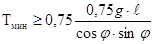
где g - масса 1 м расчалки, т;
 - пролет
расчалки, м;
- пролет
расчалки, м;
j - угол наклона прямой, соединяющей верхнюю и нижнюю точки раcчалки, к горизонтальной плоскости;
Тмин - минимальное усилие в расчалке, тс.
4.4. Требования к отдельным элементам грузоподъемных средств и оснастки
4.4.1. Канатные стропы, траверсы и бестросовые устройства
4.4.1.1. Используемые на монтаже канатные стропы, траверсы и бестросовые устройства должны соответствовать требованиям ГОСТ 25573-82 «Стропы грузовые канатные для строительства. Технические условия», ОСТ 36-73-82 «Канаты стальные такелажных средств. Методы расчета и правила эксплуатации», ОСТ 36-128-85 «Устройства и приспособления монтажные. Методы расчета и проектирования», «Правил Госгортехнадзора».
4.4.1.2. Коэффициент запаса при выборе канатных стропов, навешиваемых на грузоподъемные средства и закрепляемых к элементам оснастки, следует выбирать:
для всех видов стропов не менее 6 в соответствии с «Правилами Госгортехнадзора» за исключением витых и полотенчатых;
для витых и полотенчатых стропов - в соответствии с ОСТ 36-73-82.
4.4.1.3. Канатные стропы должны быть заблаговременно изготовлены и испытаны в соответствии с «Правилами Госгортехнадзора». Использование канатных стропов, не прошедших испытаний с 25%-ной перегрузкой на монтаже, не допускается. При изготовлении канатных полотенчатых стропов на монтаже допускается проведение их испытаний с требуемой перегрузкой совместно с оснасткой.
4.4.1.4. При использовании полотенчатых стропов (невитой конструкции) следует обеспечить равномерное натяжение всех ветвей канатов в стропе в процессе натяжения путем обстукивания, установки роликов, проворачивающихся обойм, втулок и т.д.
4.4.1.5. Полотенчатые стропы необходимо укладывать в один ряд и исключать перехлестывание ветвей каната.
4.4.1.6. Разъемные концевые соединения канатных стропов должны выполняться в соответствии с ОСТ 24090.51-80.
4.4.1.7. Применение стропов витой конструкции следует производить в исключительных случаях, когда невозможно использовать другие виды строповки. Витые стропы должны выполняться в соответствии с инструкцией по их изготовлению.
4.4.1.8. При сгибании канатом стропа элементов с острыми кромками во избежание перерезывания ветвей каната и недопустимых перегибов стропа необходимо применять инвентарные подкладки.
4.4.1.9. Конструкции бестроповых устройств должны обеспечивать поворот в плоскости подъема и отклонения грузовых полиспастов используемых средств из плоскости подъема аппарата:
на угол не менее 5° для грузоподъемных кранов;
на угол не менее 25° для такелажных средств.
4.4.1.10. В конструкциях бестроповых устройств следует предусматривать решения по дистанционной расстроповке грузоподъемных средств. При этом целесообразно осуществлять прикрепление бестроповых устройств к корпусу аппарата на осях или пальцах.
4.4.2. Полиспастные системы
4.4.2.1. Полиспастные системы могут выполняться из одно- и разнотипных блочных обоим в пределах их грузоподъемностей с соблюдением требований по их эксплуатации.
4.4.2.2. Схемы запасовки полиспастов и узлов крепления неподвижных ветвей должны исключать касание канатом и его концевым участком блочных обойм, а также не превышать допустимого угла схода каната с блоков в соответствии с требованиями «Правил Госгортехнадзора».
4.4.2.3. Во избежание возможного закручивания полиспастов (блочных обойм) при нагружении следует предусматривать установку на них специальных устройств или соответствующие решения по его предотвращению.
4.4.2.4. Не допускается укладывать полиспастные системы на землю. Укладку и перемещение блочных обойм при работе следует производить на специальных подкладках, санях и др., а движущихся канатов - по поверхностям, исключающим их загрязнение и повреждение.
4.4.2.5. Применение сдвоенных, отроенных и т.д. подлопастных систем должно выполняться с использованием уравнительных балансированных систем на основе конкретных решений ППР.
4.4.2.6. При использовании полиспастных систем необходимо предусматривать средства контроля за величинами действующих нагрузок и усилий в:
грузовых - прямой замер величины действующей нагрузки от поднимаемого аппарата, усилий в неподвижной или обегающей ветвях каната полиспаста;
вантовых, дотягивающих, стягивающих, удерживающих и тормозных - в неподвижных или обегающих ветвях каната (см. раздел 4.8).
4.4.2.7. Закрепление нулевых нитей канатов полиспастов может производиться к узлам инвентарных креплений на блочных обоймах, роликам обойм и элементам конструкций, но в полном соответствии с решением ППР.
4.4.3. Якорные устройства
4.4.3.1. При выполнении работ по монтажу аппаратов могут применяться якоря любых типов и конструкций, прошедшие соответствующее испытание и обеспечивающие надежность закрепления грузоподъемных средств, но преимущественно следующих типов:
наземные - из инвентарных железобетонных или бетонных блоков, укладываемых непосредственно на основание (грунт) или на металлическую раму, выполненную как отдельно стоящей, так и вместе с электролебедкой;
полузаглубленные - из инвентарных железобетонных блоков, укладываемых в траншею;
подземные - выполненные из монолитного железобетона или блоков с конструкциями для крепления к ним.
Выбор конструкций якорей обусловлен величиной действующего усилия и конкретными условиями площадок для их установки.
4.4.3.2. При устройстве наземного якоря рекомендуется укладывать блоки на металлические рамы с шипами, позволяющими увеличить нагрузку на якорь. В этом случае шипы должны быть полностью заглублены.
4.4.3.3. Железобетонные и бетонные блоки, уложенные для сооружения наземных якорей, следует надежно увязать между собой.
4.4.3.4. Засыпку траншей подземного якоря производить грунтом послойно по 15 см с уплотнением каждого укладываемого слоя. Засыпку траншей якоря зимой производить сухим песком с соответствующим уплотнением.
4.4.3.5. Подземные якоря, выполненные из монолитного железобетона должны иметь конструкции креплений, позволяющие осуществлять присоединение к ним вантовых систем (расчалок, тяг и т.д.) под требуемый угол в плане и вертикальной плоскости.
4.4.3.6. При устройстве полузаглубленных, подземных и наземных якорей баз рам канатный строп укладывается в землю предварительно защищенным от коррозии (смазка, специальное покрытие, обертывание промасленным материалом).
4.4.3.7. При устройстве подземных и полузаглубленных якорей необходимо обеспечить осушение траншеи якоря и исключить возможность обрушения ее стенок перед укладкой якорных устройств.
4.4.4. Байтовые системы (расчалки) и тяги
4.4.4.1. Расчалки выполняются из стальных канатов в соответствии с ОСТ 36-73-82 одно- или двухветьевыми, у которых на одном из концов установлен уравнительный блок.
4.4.4.2. Присоединение расчалок должно выполняться через коуши, обеспечивающие минимально допустимое отношение диаметра каната к диаметру огибаемой поверхности, т.е. диаметр коуша ³4dК.
4.4.4.3. Вантовые системы, устанавливаемые на грузоподъемные средства, должны быть оснащены полиспастными системами и лебедками, позволяющими изменять их длину, а для такелажных средств дополнительно обеспечить их подъем, предварительное натяжение, наклон и перемещение. При этом в них необходимо устанавливать приборы контроля, позволяющие контролировать величину действующей нагрузки (см. раздел 4.8).
4.4.4.4. Концевые соединения канатов расчалок и тяг выполняются разъемными в соответствии с ОСТ 24.090.51-80 или неразъемными в соответствии с ГОСТ 25573-82.
4.4.5. Электролебедки
4.4.5.1. Электролебедки, используемые на монтаже, должны быть снабжены рамами и устанавливаться на специально подготовленных основаниях или фундаментах с последующим надежным закреплением к якорям. Возможно изготовление дамы лебедки, одновременно являющейся дамой якоря.
4.4.5.2. Установку электролебедок следует производить на расстоянии не менее 20 и не более 40 длин барабана от отводного ролика (блочной обоймы), а при невозможности выполнения этого условия установить дополнительные отводные блоки.
4.4.5.3. Электролебедкам, имеющим одинаковое функциональное назначение, например, электролебедки вантовых систем, необходимо присваивать порядковые номера с установкой на площадке монтажа хорошо видимых щитов с нанесенными номерами.
4.4.5.4. При закреплении электролебедки к конструкциям, являющимся временным якорем (стойки, колонны здания и т.д.), схема их нагружения, установки и крепления должна согласовываться с организацией-проектировщиком или владельцем конструкции.
4.4.5.5. Закрепление электролебедки к якорю должно выполняться жестко в двух точках (по ширине лебедки).
4.4.5.6. Электролебедка должна устанавливаться таким образом, чтобы отводной блок находился в плоскости, перпендикулярной оси барабана лебедки, проходящей через его середину.
4.4.5.7. Установка электролебедки должна обеспечивать требуемый по техническим характеристикам угол набегания каната на барабан при навивке и не допускать перекоса лебедки в плане.
4.5. Технология подъема аппарата
4.5.1. До подъема аппарата независимо от метода монтажа необходимо:
установить на аппарате строповочные устройства и закрепить требуемую для подъема оснастку;
проверить работоспособность используемого средства и его механизмов, а также соответствие их установки решениям ППР;
предусмотреть средства для расстроповки аппарата после его установки в проектное положение.
4.5.2. Подъем и установку аппаратов с защитными покрытиями необходимо производить с принятием мер для предохранения их от повреждения в соответствии с решениями ППР.
4.5.3. До подъема аппарата должны быть оформлены документы, указанные в разделе 4.9.
4.5.4. Метод скольжения
4.5.4.1. Подъем аппаратов методом скольжения выполняется в соответствии со схемами приложения 4.
4.5.4.2. При подъеме следует применять схемы строповки, указанные в приложении 4. В отдельных случаях допускается применять строповку аппарата с использованием для этого штуцеров, люков и других деталей при условии согласования их прочности с разработчиком аппарата.
4.5.4.3. Перемещение низа аппарата в процессе подъема производится средствами, указанными в приложении 4, в зависимости от величин действующих нагрузок (приложение 5).
4.5.4.4. Подъем аппарата методом скольжения с отрывом производится в следующей последовательности:
1) выложить аппарат в исходное для подъема положение, уложив (закрепив) низ аппарата на средство для перемещения, и установить системы подтаскивания и удержания;
2) выполнить пробный от опор верхней части аппарата от опор на 200-300 мм с выдержкой 10-15 мин, проверив при этом состояние грузоподъемных средств и используемой оснастки;
3) работая грузоподъемными средствами и системой подталкивания низа аппарата в соответствии с циклограммой подъема, продолжить его подъем до положения, близкого к положению неустойчивого равновесия (центр массы аппарата и точка опирания низа расположены на одной вертикали);
4) натянуть удерживающую систему и продолжить подъем аппарата до вертикального положения, работая попеременно грузоподъемными средствами и удерживающей системой;
5) установить аппарат на фундамент и закрепить его.
4.5.4.5. Система подталкивания в зависимости от величин действующих нагрузок состоит из:
каната и электролебедки;
системы «канат-полиспаст-якорное устройство-электролебедка»;
двух и более систем, указанных выше.
В последнем случае следует обеспечить равномерность работы спаренных систем путем установки балансирных траверс или других средств.
4.5.4.6. Система удержания выполняется аналогично системе подтаскивания по п. 4.5.4.5.
4.5.4.7. В случае использования для перемещения низа аппарата кранов системы подтаскивания и удержания не устанавливаются. При этом отклонение грузовых-полиспастов кранов в процессе подъема не должно превышать допустимых величин.
4.5.4.8. Системы удержания и подталкивания необходимо устанавливать в плоскости подъема аппарата.
4.5.4.9. Перемещение низа аппарата в процессе подъема следует производить плавно, без рывков, не допускать отклонения грузовых полиспастов от вертикали выше значений, указанных в проекте производства работ.
4.5.4.10. Положение аппарата в момент отрыва от земли определяется расчетным путем, а место отрыва на площадке указывается репером.
4.5.4.11. С целью снижения динамических нагрузок отрыв от земли низа аппарата, подъемная масса которого близка к предельно допустимой грузоподъемности используемых средств, следует производить постепенно при минимальной скорости подъема.
4.5.4.12. Монтаж аппарата методом скольжения без отрыва опоры аппарата от земли выполняется в соответствии с требованиями «Руководства по технологии монтажа аппаратов колонного типа способом скольжения без отрыва от земли», разработанного ВНИИмонтажспецстроем.
4.5.4.13. Перемещение низа аппарата при скольжении без отрыва выполняется в основном на тележках (санях) специальной конструкции, имеющих шарнирное устройство для поворота аппарата в процессе подъема.
4.5.4.14. Подъем аппарата методом скольжения без отрыва следует проводить в следующей последовательности:
1) аналогично п. 4.5.4.4. подпункты 1, 2;
2) работая попеременно грузоподъемными средствами и системой подталкиваиия, в соответствии с циклограммой подъема довести тележку до упора, установка которого соответствует проектному положению аппарата. При этом аппарат должен находиться в положении, близком положению неустойчивого равновесия;
3) работая системами дотягивания и торможения, установленными до подъема, вывести аппарат в вертикальное положение. Особое внимание следует уделить передаче нагрузок с дотягивающей системы на тормозную при переводе аппарата через положение неустойчивого равновесия;
4) закрепить аппарат на фундаменте и демонтировать подтаскивающую тележку.
4.5.5. Метод поворота вокруг шарнира
4.5.5.1. Подъем аппаратов методом поворота вокруг шарнира выполняется в соответствии с чертежами приложения 6.
4.5.5.3. Шарнирное устройство в зависимости от места его установки может выполняться двух типов - на разрезной опоре аппарата и фундаменте (см. приложение 6).
Примечание. По согласованию с предприятием - изготовителем аппарата допускается установка шарнира на корпусе аппарата.
14.5.5.4. Шарнирное устройство должно обеспечивать:
работоспособность при действующих нагрузках и исключение просадки шарнира при подъеме;
горизонтальность оси шарнира и перпендикулярность ее плоскости подъема;
соответствие высотных отмоток фундамента и шарнира, обеспечивающих возможность установки аппарата в проектное положение;
соответствие расположения анкерных устройств фундамента и отверстий в опорной части аппарата для последующей установки разъемных фундаментных болтов.
4.5.5.6. Перед подъемом аппарата следует проверить:
правильность расположения грузоподъемных средств, тормозной системы и шарнирного устройства;
соосность расположения якорей боковых расчалок, если они имеются, оси поворота шарнирного устройства;
правильность и надежность строповки аппарата и крепления шарнирного устройства на фундамент и к аппарату;
выполнение испытаний в соответствии с требованиями раздела 4.1 настоящих ВСН.
4.5.5.7. Подъем аппарата методом поворота вокруг шарнира выполняется в следующей последовательности:
1) произвести пробный отрыв верха аппарата от опор на 200-300 мм с выдержкой в течение 15 мин и проверкой состояния оснастки и грузоподъемных средств;
2) работая грузоподъемными средствами, в соответствии с циклограммой подъема повернуть аппарат на угол, не доходящий на 5-10° до положения неустойчивого равновесия;
3) включить в работу тормозную оттяжку, создав в ней нагрузку, равную 20-30% расчетной (см. раздел 4.8);
4) с помощью грузоподъемных средств перевести аппарат через положение неустойчивого равновесия, передав нагрузку на тормозную оттяжку;
5) попуская тормозную оттяжку (систему) и ослабляя полиспасты грузоподъемного средства, опустить аппарат в проектное положение.
4.5.5.8. В процессе подъема и во время периодических остановок следует следить за:
1) работой и просадкой грузоподъемных средств, в том числе углами отклонения подъемных полиспастов;
2) состоянием шарнирного устройства;
3) состоянием якорных устройств;
4) работой грузовых лебедок, в том числе правильностью навивки каната на барабан и состоянием узлов крепления канатов;
5) состоянием используемых канатов и полиспастных систем с соблюдением мер по исключению их возможного закручивания и перекосов блочных обойм;
6) положением аппарата в плоскости подъема;
7) равномерностью натяжения боковых расчалок аппарата, если они установлены;
8) углом подъема аппарата.
4.5.5.9. Поворот вокруг шарнира с дотягиванием является разновидностью метода поворота вокруг шарнира и принимается в случае, когда грузоподъемные средства не имеют достаточных грузовысотных характеристик для вывода аппарата в проектное положение. При этом рационально использовать метод поворота вокруг шарнира о дотягиванием при угле подъема аппарата не менее 70° (см. приложение 6).
1) по п. 4.5.5.7, подпункт 1;
2) поднять аппарат до предельного угла, обусловленного возможностями грузоподъемного сродства, используя указания п. 4.5.5.7, подпункт 2;
3) включить в работу дотягивающую систему и передать на нее нагрузку от грузоподъемного средства;
4) допуская тормозную оттяжку, довернуть аппарат с помощью дотягивающей системы на угол, не доходящий на 5-10° до положения неустойчивого равновесия;
5) по п. 4.5.5.7, подпункт 3;
6) с помощью дотягивающей системы перевести аппарат через положение неустойчивого равновесия, передав нагрузку на тормозную систему;
7) по п. 4.5.5.7, подпункт 5;
4.5.5.11. Дотягивающая система в зависимости от действующих нагрузок может состоять из:
канатной тяги, электролебедки, закрепленной на якоре;
канатной тяги, полиспаста, электролебедки, якорей полиспаста и электролебедки.
В отдельных обоснованных случаях допускается установка двух объединенных между собой дотягивающих систем, но при условии направления действия их равнодействующей силы в плоскости подъема аппарата.
4.5.5.12. Закрепление дотягивающей системы может производиться за верхнюю часть аппарата с проверкой несущей способности стенки корпуса аппарата в месте ее прикрепления при соответствующем согласовании схемы нагружения с проектировщиком. Крепление дотягивающей системы к аппарату должно исключать ее соскальзывание во время подъема. Отклонение дотягивающей системы от плоскости подъема определяется проектом производства работ.
4.5.5.13. Контроль в процессе подъема следует производить в соответствии с п. 4.5.5.8 с дополнительным контролем за состоянием дотягивающей системы и ее элементов.
4.5.5.14. Метод поворота вокруг шарнира грузоподъемными кранами с помощью опорной стойки выполняется в соответствии с требованиями «Руководства по монтажу кранами оборудования вертикального типа с опорой его на стойку» и рекомендуемой схемой подъема по приложению 6.
4.5.5.15. Применение метода с использованием опорной стойки является рациональным, если имеется возможность подъема аппарата грузоподъемными кранами на начальном этапе (установка аппарата на стойку) на угол 25-35°.
4.5.5.16. Конструкция опорных стоек должна соответствовать требованиям ОСТ 36-128-85.
4.5.5.17. Подъем аппарата методом поворота вокруг шарнира кранами с помощью опорной стойки осуществляется в следующей последовательности:
1) по п. 4.5.5.7, подпункт 1;
2) по п. 4.5.5.10, подпункт 2;
3) установить опорную стойку и стягивающий полиспаст в начальное положение в соответствие с решениями ППР;
4) работая грузоподъемными кранами, передать нагрузку с кранов на опорную стойку и убедиться в отсутствии неравномерной просадки низа опорной стойки;
5) перестропить грузоподъемные краны (кран) за низ опорной стойки;
6) по п. 4.5.5.7, подпункт 1;
7) по п. 4.5.5.7, подпункт 2;
8) по п. 4.5.5.7, подпункт 3;
9) по п. 4.5.5.7, подпункт 4;
10) по п. 4.5.5.7, подпункт 5.
Примечание. По п. 7 возможно попеременное выполнение операций, связанных с работой грузоподъемных средств и уменьшением (укорочением) длины стягивающей системы.
4.5.5.18. Конструкция узла соединения опорной стойки с корпусом аппарата должна обеспечивать расположение стойки под нагрузкой в плоскости подъема на всех его этапах.
4.5.5.19. Контроль в процессе подъема аппарата следует выполнять в соответствии с требованиями п. 4.5.5.8, учитывая дополнительные требования:
располагать опорную стойку строго в плоскости подъема аппарата;
не допускать касания тормозной оттяжкой грузоподъемных кранов и их элементов, а также опорной стойки.
4.6.5.21. Испытание оснастки, в том числе и опорной стойки, должно выполняться в соответствии с разделом 4.1. При этом испытательная нагрузка может создаваться любым известным способом, а для опорной стойки и узла ее соединения с аппаратом - изменением угла наклона стойки.
4.5.6.22. Подъем методом поворота вокруг шарнира с помощью гидроподъемника осуществляется путем выведения аппарата отдельными циклами (шагами) в вертикальное положение и выполняется в соответствии с черт. 10 приложения 6.
4.5.5.23. При подъеме аппарата с помощью гидроподъемника следует использовать конструкции шарнирных устройств в соответствии с пп. 4.5.5.2, пп. 4.5.5.3.
4.5.6.24. Конструкция механизма подъема гидроподъемника должна обеспечивать равномерный подъем аппарата с надежной фиксацией при каждом рабочем шаге перемещения и исключать отклонение аппарата из плоскости подъема при перекосе механизма подъема.
4.5.6.25. Контроль за величинами перекоса механизма подъема в процессе подъема аппарата должен выполняться автоматически. В случаях перекоса необходимо предусмотреть способы и средства его устранения.
4.5.6.26. Перед подъемом аппарата следует выполнить проверку используемого гидроподъемника и аппарата в соответствии с п. 4.5.6.6 и дополнительно:
установить стягивающие системы между шарнирным устройством и опорной частью несущих стоек или зафиксировать нижние части стоек.
4.5.5.27. Контроль в процессе подъема осуществляется в соответствии с п. 4.5.5.8 и дополнительно за:
работоспособностью механизма подъема;
надежной фиксацией механизма подъема при холостом и рабочем ходах;
величинами допустимых перекосов механизма подъема.
4.5.5.28. Метод выжимания является разновидностью метода поворота вокруг шарнира с опорной стойкой и выполняется такелажными средствами за счет перемещения низа опорной конструкции по направляющему пути и может выполняться в соответствии с чертежами приложения 6.
4.5.5.29. При подъеме аппарата методом выжимания следует использовать конструкции шарнирных устройств и их расположениях в соответствии с пп. 4.5.5.2; пп. 4.5.5.3 и приложением 6, а при их установке соблюдать требования пп. 4.5.5.4; 4.5.5.5.
4.5.5.30. Контроль в процессе подъема аппарата методом выжимания осуществляется в соответствии с требованиями п. 4.5.5.8 и дополнительно за:
правильностью положения стягивающей системы (толкателя, полиспаста и т.д.) и аппарата относительно плоскости подъема, а также их взаимного расположения;
перекосом нижней части опорной конструкции по отношению к верхней ее части (перекос не должен превышать величин, указанных в ППР).
4.5.5.31. Метод поворота вокруг шарнира с помощью падающего шевра выполняется такелажными средствами за счет шарнирного поворота шевра в плоскости подъема с одновременным выводом аппарата в проектное положение. Схема подъема приведена в приложении 6.
4.5.5.32. Строповка аппарата и установка тормозной системы должны выполняться в соответствии с приложением 6.
4.5.5.33. Перед подъемом аппарата с помощью падающего шевра следует соблюдать требования по контролю п. 4.5.5.6 с дополнительной проверкой:
установки шевра таким образом, чтобы плоскость подъема проходила через главную ось аппарата и середину ригеля шевра;
установки конструкции стягивающей системы по п. 4.5.5.20 или закрепления опорной части шевра с целью исключения его сдвига и перекоса оси шарнира относительно плоскости подъема.
4.5.5.34. Безъякорный способ является разновидностью метода поворота вокруг шарнира и осуществляется за счет поворота портала в плоскости подъема без использования дотягивающих систем и выполняется в соответствии со схемой по приложению 6.
4.5.5.35. Безъякорный способ подъема аппарата следует применять только в тех случаях, когда применение других способов подъема невозможно.
4.6. Монтаж аппаратов, собираемых на фланцах
4.6.1. При монтаже аппаратов отдельными блоками (царгами), собираемыми на фланцах, до подъема следует проверять горизонтальность привалочных поверхностей каждой царги. Отклонения не должны превышать величин, указанных в технической документации и нормативных документах. В случае превышения указанных величин допусков аппарат к монтажу не допускается.
4.6.2. Монтаж следует начинать с установки на фундаменте базового блока (царги), который необходимо устанавливать и выверять с помощью регулировочных винтов и подкладок.
4.6.3. Правильность установки базовой царги в горизонтальной плоскости необходимо проверить по привалочной поверхности верхнего фланца царги в двух взаимно перпендикулярных плоскостях с помощью поверочной линейки и брускового уровня. Результаты выверки базовой царги должны быть оформлены актом.
4.6.4. При наличии регулирующих винтов вместе с ограждающей их опалубкой они должны быть удалены после набора бетоном подливки прочности в соответствии с требованиями СНиП 3.05.05-84.
4.6.5. Монтаж последующих царг разрешается производить после достижения бетоном подливки требуемой прочности. Регулировочные винты до нагружения базовой царги должны быть удалены.
4.6.6. При установке блока (царги) с нанесенной теплоизоляцией должен быть обеспечен свободный доступ к болтовым соединениям царг для их затяжки.
4.7. Установка и выверка аппаратов на фундаменте
4.7.1. Установка аппаратов должна производиться на выверенный и очищенный в соответствии с требованиями СНиП 3.05.05-84 фундамент и осуществляется в соответствии с требованиями ВСН 361-85.
4.7.2. Должны быть проверены фундаментные болты и их части и обеспечено свободное навинчивание резьбовых соединений. Втулки фундаментных болтов и колодцы для них после проверки должны быть закрыты пробками.
4.7.3. При установке аппарата в зависимости от конструкции его опорной части могут применяться:
жесткие опорные конструкции (бесподкладочный метод монтажа), позволяющие осуществлять установку аппаратов без последующей выверки;
металлические подкладки (клиновые или плоские), остающиеся затем в бетонной подливке. Плоские пакеты подкладок укладывают на фундамент с соответствующей нивелировкой до установки аппарата, а их размер и количество определяют в зависимости от допустимого удельного давления на фундамент максимальной массы аппарата (испытательной и эксплуатационной) с учетом массы обслуживающих площадок, трубопроводов, снеговой и ветровой нагрузок и т.д.;
регулировочные винты, если они предусмотрены в конструкции аппарата;
клиновые или винтовые инвентарные домкраты, если имеются условия для их использования.
4.7.4. Аппарат может быть освобожден от грузоподъемных средств только после окончательной выверки и закрепления фундаментными болтами. В тех случаях, когда для выверки аппарата не используются грузоподъемные средства (метод поворота вокруг шарнира и др.), с помощью которых осуществлялся подъем, допускается осуществлять выверку после временного закрепления аппарата фундаментными болтами.
4.7.5. При установке аппарата с применением цельных фундаментных болтов (анкеров) необходимо использовать патрубки, центрирующие отверстия в опорном кольце аппарата, и фундаментные болты, исключающие деформацию резьбового участка болта.
4.7.6. Установку аппарата на фундамент следует производить плавно, с малой скоростью, избегая перекоса аппарата и неравномерного опирания его на пакеты подкладок.
4.7.7. При закреплении колонных аппаратов на фундаменте с помощью составных (разъемных) фундаментных болтов должна обеспечиваться проектная глубина завинчивания верхней части болта в муфту.
4.7.8. Проверку правильности установки аппарата и его выверку на фундаменте, т.е. его вертикальность, следует выполнять в соответствии и требованиями ОСТ 36-18-77, причем выверку целесообразно производить в утренние иди дневные часы с целью получения наиболее точных результатов установки аппарата.
4.7.9. Производить регулировку положения аппарата путем неодинакового затягивания фундаментных болтов категорически запрещается. Контроль затяжки болтов выполнять в соответствии с требованиями.
4.7.10.
Допускаемое отклонение от вертикали образующей аппаратов типа ректификационных
колонн высотой не более 50 м при отношении высоты к диаметру 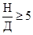
Для более высоких аппаратов допускаемые отклонения не должны превышать 0,03% высоты аппарата, в том числе:
1) при Н = 80 м
– 24 мм ( 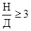
2) при Н = 100 м
- 30 мм ( 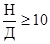
При отношениях 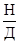
4.7.11. Для аппаратов, собираемых на фланцах, допускаемое отклонение образующей от вертикали должно быть в пределах 0,15% высоты аппарата, но не превышать 15 мм.
4.8. Контроль, управление и связь
4.8.1. С целью обеспечения надежности и безопасности выполняемых работ в процессе монтажа аппарата следует осуществлять непрерывный контроль за:
отклонением грузовых полиспастов - с помощью угломеров, теодолитов или фиксированных на монтажной площадке точек (реперов);
наклоном такелажных средств - с помощью угломеров и теодолитов или реперов;
положением аппарата в процессе подъема (в зависимости от метода) - с помощью угломеров, установленных на аппарате и по реперам;
величинами нагрузок в грузоподъемных средствах, особенно на пределе грузоподъемности средств и при выполнении работ неапробированными и новыми способами монтажа - с помощью тарированных грузов, электрических и механических динамометров, тензометрических приборов и т.д.;
ветровой нагрузкой - с помощью переносных или стационарных анемометров;
положением пригрузов, исключающих закручивание полиспастных систем;
величиной схождения блочных обойм полиспастных систем;
положением якорных устройств;
работой лебедок и правильностью нашивки каната на барабан.
4.8.2. Координацию действий участников подъема и централизованный контроль за рабочим состоянием грузоподъемных средств с обеспечением синхронности работы нескольких грузоподъемных механизмов в процессе монтажа осуществлять с пульта централизованного дистанционного управления и контроля. Оператор пульта принимает и выполняет команды только от руководителя подъема.
4.8.3. В конструкции пульта должны обеспечиваться управление и контроль как группой механизмов, так и каждым в отдельности. С пульта выполняется управление лебедками и механизмами систем, участвующих в подъеме.
руководителю подъема;
бригадиру такелажников или ответственному стропальщику;
крановщикам и машинистам лебедок;
оператору пульта централизованного управления;
наблюдателям за состоянием грузоподъемных средств и поднимаемым аппаратом, в том числе за якорями;
представителю технического надзора и другим лицам, назначенным главным инженером монтажной организации.
Прямая связь осуществляется в направлении «руководитель подъема - участники», а обратная допускается только при неполадках и аварийных ситуациях. Прием команд участниками подъема и их исполнение следует осуществлять с последующим ответом.
4.8.5. В случаях приближения поднимаемой массы аппарата к предельной грузоподъемности используемых средств следует определять фактическую поднимаемую массу аппарата взвешиванием или другим способом.
4.8.6 Контроль усилий в канатах грузовых полиспастов такелажных средств следует осуществлять с помощью механических динамометров, устанавливаемых у их основания. Для полиспастов вантовых, тормозных, дотягивающих и других систем контроль усилий осуществляется с помощью динамометров, устанавливаемых в месте кропления неподвижной ветви полиспаста или в стропе привязки отводного блока. При необходимости определения усилия, действующего в движущемся канате, производят установку СКЭДа (съемного канатного электродинамометра). Рекомендуемая высота установки динамометра не должна превышать 3 - 3,5 м.
4.8.7. В отдельных обоснованных случаях допускается установка на неподвижных ветвях каната полиспаста тарированного груза, отрыв которого от основания обусловливает факт достижения максимальной допустимой нагрузки в системе.
4.9. Производственная документация и приемка работ
4.9.1. В процессе монтажа аппарата монтажной организацией должна оформляться производственная документация в соответствии с требованиями СНиП 3.01.01-85, СНиП 3.05.05-84, ВСН 478-86 и указаний настоящего нормативного документа.
4.9.2. Документы, оформляемые при выполнении монтажных работ, делятся на три основные группы и определяют готовность:
объекта строительства к производству работ по монтажу аппарата; аппарата на отдельных этапах монтажа;
грузоподъемных средств и используемой оснастки, включая контрольно-измерительные приборы.
Кроме того, в обязательном порядке должны составляться документы, подтверждающие подготовленность бригады, участка и т.д. к выполнению подъема аппарата с выделением персональных обязанностей каждого участника подъема.
4.9.3. При выполнении работ по монтажу аппаратов монтажная организация совместно с другими участниками строительства оформляет оперативную документацию в соответствии с требованиями ВСН 478-86 и приложением 7 настоящих ВСН.
4.9.4. Сдача смонтированного аппарата комиссии должна выполняться монтажной организацией в соответствии с требованиями СНиП 3.05.05-84.
4.10. Техника безопасности и технический надзор
4.10.1. При производстве работ по монтажу аппаратов необходимо соблюдать правила безопасности труда в соответствии с требованиями СНиП III-4-80, «Правил Госгортехнадзора», ГОСТ 12.3.033-84.
4.10.2. Площадку монтажа аппаратов следует обозначить хорошо видимыми предупреждающими знаками, закатами и надписями. Опасная зона должна быть ограждена в соответствии с ГОСТ 23407-78, вдоль ее границы на время подъема должны быть выставлены контрольные посты и наблюдатели. Смотровая площадка должна находиться вне опасной зоны, иметь ограждение и необходимые информационные щиты и указатели, например, схему монтажной площадки, информацию о ходе выполнения работ и т.д.
4.10.3. Перед началом работ по подъему аппарата следует произвести инструктаж всех участников по технологии производства работ и технике безопасности, знанию ими своих персональных обязанностей с соответствующей записью в журнале регистрации инструктажа на рабочем место. При монтаже уникальных аппаратов или особой сложности условий производства работ следует провести репетицию подъема с отработкой необходимых действий и команд ее участников.
4.10.4. Присутствие в опасной зоне лиц, не участвующих в подготовке и проведении монтажа, а также проезд машин и механизмов, не имеющих отношения к монтажу, запрещаются. Допуск в опасную зону лиц, не связанных с подъемом, должен осуществляться только на основании разрешения руководителя подъема с записью в журнале монтажных работ.
4.10.5. Все участники подъема, в том числе рабочие, инженерно-технические работники и руководитель подъема должны иметь спецодежду, красную нарукавную повязку и каски условных цветов. При этом отдельные участки подъема должны иметь средства двухсторонней радиотелефонной связи (см. п. 4.8.4 настоящих норм).
4.10.6. В мостах установки строповых устройств для подъема аппарата, при отсутствии проектных обслуживающих площадок, следует предусматривать временные обслуживающие площадки в соответствии с решениями ППР.
4.10.7. Измерительные приборы, используемые при монтаже, должны пройти проверку в соответствующем порядке и в установленные сроки. Результаты их проверки должны быть зафиксированы в акте (приложение 7).
4.10.8. Монтажные краны грузоподъемностью 63 т и более, механизмы такелажных средств грузоподъемностью 200 т и более должны быть оснащены проблесковыми маячками рабочего состояния механизмов (типа применяемых на спецмашинах).
4.10.9. На пульте централизованного управления и контроля должен быть установлен рубильник (кнопка), отключающий при аварийной необходимости все механизмы.
4.10.10. Подъем аппарата следует начинать с пробного отрыва его от временных опор на 200-300 мм, при котором в течение требуемого времени, но не менее 15 мин должны быть осмотрены все механизмы и грузоподъемные средства, после чего руководитель дает разрешение на продолжение подъема.
4.10.11. На монтажной площадке во время подъема необходимо обеспечить дежурство электриков и медперсонала, а также в необходимых случаях предусмотреть горячее питание участников подъема.
4.10.12. Монтаж аппаратов разрешается вести только в светлое время суток при нормальной видимости всех элементов грузоподъемных средств и поднимаемого аппарата. Выполнение работ по монтажу в вечернее и ночное время, в порядке исключения, возможно производить при обеспечении достаточной освещенности (не менее 25 лк) монтажной площадки и только по письменному разрешению главного инженера монтажного управления. При этом следует обеспечить расположение источников освещения таким образом, чтобы они не ослепляли работающих и исключали образование тени.
4.10.13. Запрещается выполнение монтажных работ по подъему аппаратов при скорости ветра, превышающей 9 м/с, снегопаде, дожде и т.д., если в проекте производства работ не ужесточены указанные требования.
4.10.14. При вынужденной остановке подъема аппарат необходимо предохранить от возможных перемещений (самоопускание, раскачивание и т.д.) путем установки дополнительных расчалок и фиксаторов.
4.10.15. В процессе подъема аппарата и во время остановок исполнители и руководитель подъема должны следить за тем, чтобы аппарат и грузоподъемные средства не соприкасались друг с другом и не касались рядом стоящих конструкций.
4.10.16. При монтаже технически сложных аппаратов и в особо сложных условиях производства работ, а также в случаях, предусмотренных заданием на разработку ППР, монтажная организация обязана известить разработчика ППР о начале выполнения монтажных работ и необходимости присутствия представителей технического надзора.
4.10.17. Установка и закрепление грузоподъемных средств и их элементов (вантовых систем, расчалок, тяг, стропов и т.д.) на строительных и других конструкциях категорически запрещаются без предварительного согласования с проектировщиком, изготовителем или владельцем конструкции.
4.10.18. Перед подъемом аппарат необходимо очистить от грязи, земли, снега, льда и т.д., тщательно проверить надежность крепления отдельных деталей, поднимаемых вместе с аппаратом, а также удалить все посторонние предметы и детали, которые могут остаться от подготовки аппарата к подъему (болты, гайки, зажимы, электроды и т.д.), во избежание падения их с высоты во время подъема.
4.10.19. Перед подъемом необходимо проворить и убедиться в том, что на аппарате металлоконструкции, трубопроводы и изоляция установлены по проекту и в соответствии с решениями ППР и не будут соприкасаться с грузоподъемными средствами или их элементами.
4.10.20. Отрыв примерзшего аппарата от основания с помощью грузоподъемных средств категорически запрещается. В случае примерзания необходим нагрев аппарата паром или другим теплоносителем.
4.10.21. На аппаратах, изолируемых до подъема, изоляционные работы должны быть закончены: маты, плиты или другие изолирующие материалы надежно закреплены, а поверх их установлена наружная облицовка. Подъем аппаратов с изоляцией, но без проектных защитных покрытий запрещается.
4.10.22. Подъемы рекомендуется производить при температуре окружающего воздуха выше минус 10. При минусовых температурах необходимо убедиться в том, что все элементы грузоподъемных, грузозахватных приспособлений, используемых при подъеме, рассчитаны на работу при отрицательных температурах.
4.10.23. После установки аппарата в проектное положение необходимо выполнить его электрозащиту в соответствии с требованием проекта.
4.10.24. При возникновении исключительных обстоятельств, требующих прекратить подъем аппарата (наступление темноты, сильный ветер, отключение электроэнергии и т.д.), следует принять чрезвычайные меры предосторожности: включить все тормоза лебедок, снять о лебедок рукоятки, на электролебедках отключить электроэнергию, выставить предупреждающие знаки и надписи, оставить ответственных дежурных из состава участников подъема и т.д.
Приложение 1
ПЕРЕЧЕНЬ ОСНОВНЫХ НОРМАТИВНЫХ ТЕХНИЧЕСКИХ ДОКУМЕНТОВ, ОТНОСЯЩИХСЯ К МОНТАЖУ АППАРАТОВ КОЛОННОГО ТИПА
|
№ п/п |
Обозначение документа |
Наименование документа |
Примечание |
|
|
1 |
Корпуса цилиндрические стальных сварных сосудов и аппаратов |
|||
|
2 |
ГОСТ 24306-80 |
Сосуды и аппараты стальные сварные. Технические требования |
||
|
3 |
Устройства строповые для сосудов и аппаратов. Штуцера монтажные |
|||
|
4 |
ГОСТ 1.25-76 |
Метрологическое обеспечение. Основные положения |
||
|
б |
ГОСТ 8.054-73 |
Метрологическое обеспечение подготовки производства |
||
|
6 |
Стропы грузовые канатные для строительства. Технические условия |
|||
|
7 |
ГОСТ 24444-80 |
Оборудование технологическое. Общие монтажно-технологические требования |
||
|
8 |
ГОСТ 25168-82 |
Аппараты стальные эмалированные. Технические требования. Методы испытаний |
||
|
9 |
Строительные машины. Общие требования безопасности при эксплуатации |
|||
|
10 |
СНиП 3.06.05-84 |
Монтаж технологического оборудования и трубопроводов. Основные положения |
||
|
11 |
Организация строительного производства |
|||
|
12 |
Механизация строительного производства. Рельсовые пути башенных кранов |
|||
|
13 |
ОСТ 36-116-85 |
Устройства шарнирные двухопорные, устанавливаемые на фундаменте |
||
|
14 |
ОСТ 36-18-77 |
Приспособления для выверки аппаратов колонного и башенного типов. Конструкция, размеры, технические требования |
||
|
15 |
ОСТ 36-28-78 |
Процессы производства работ. Такелажные работы. Общие требования безопасности |
||
|
16 |
ОСТ 36-73-82 |
Канаты стальные такелажных средств. Методы расчета и правила эксплуатации |
||
|
17 |
ОСТ 26-291-79 |
Сосуды и аппараты стальные сварные. Технические требования |
||
|
18 |
ОСТ 36-128-85 |
Устройства и приспособления монтажа. Методы расчета и проектирования |
||
|
19 |
Инструкция по монтажу аппаратов воздушного охлаждения |
|||
|
20 |
Инструкция по установке технологического оборудования на фундаментах |
|||
|
21 |
ВСН 274-74 |
Инструкция по технике безопасности при эксплуатации стреловых |
ВНИИмонтажспецстрой |
|
|
22 |
Указания по монтажу технологического оборудования самоходными стреловыми кранами |
То же |
||
|
23 |
- |
Руководство по технологии монтажа аппаратов колонного типа способом скольжения без отрыва от земли |
||
|
24 |
- |
Руководство по монтажу кранами оборудования вертикального типа с опорой его на стойку |
||
|
25 |
- |
Рекомендации по применению самоходных стреловых кранов типа СКГ на механомонтажных работах |
||
|
26 |
ССБТ. Нормы освещения строительных площадок |
|||
|
27 |
- |
Правила устройства и безопасной эксплуатации грузоподъемных кранов (Госгортехнадзор СССР) |
||
|
28 |
- |
Правила по эксплуатации сосудов и аппаратов (Госгортехнадзор СССР) |
||
Приложение 2
КОЭФФИЦИЕНТЫ, КОТОРЫЕ СЛЕДУЕТ УЧИТЫВАТЬ ПРИ РАСЧЕТЕ И ВЫБОРЕ ГРУЗОПОДЪЕМНЫХ СРЕДСТВ
1. При расчете такелажных средств действие динамических нагрузок в зависимости от используемых средств и методов монтажа следует учитывать коэффициентами: КД=Кд1, Кд2,
где Кд1 - коэффициент, учитывающий динамические нагрузки от средства, создающего тяговое усилие (табл. 1).
Кд2 - коэффициент, учитывающий динамику от способа перемещения низа аппарата (табл. 2).
Таблица 1
|
Коэффициент Кд1 |
|
|
Трактор, трубоукладчик (крепление за фаркопф) |
1,2 |
|
Тракторная лебедка |
1,1 |
|
Электрическая лебедка |
1,06 |
Таблица 2
|
Коэффициент Кд2 |
|
|
Метод скольжения: |
|
|
подталкивание на санях (подкладном листе) по грунту |
1,1 |
|
качение по каткам, тележкам по рельсовому пути |
1,02 |
|
Метод поворота |
1,00 |
2. Выбор грузоподъемных средств при их спаренной работе должен производиться с учетом коэффициента неравномерности КН*.
* Рассматриваются спаренные грузоподъемные средства со строповкой выше центра массы аппарата.
Значения коэффициента неравномерности приведены в табл. 3.
Таблица 3
|
Значение коэффициента неравномерности |
Примечание |
||
|
1 |
Автоматическая синхронизация |
1,0 |
|
|
2 |
Механическая: |
||
|
уравнительный блок |
1,05 |
Контроль за перетеканием каната через блок |
|
|
балансирная траверса |
1,0 |
Точки подвеса траверсы и груза находятся на одной прямой |
|
|
3 |
Контроль за величинами нагрузок с помощью приборов при отсутствии системы балансировки: |
||
|
при измерении усилия непосредственно на консоли мачты |
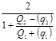 |
Q1, Q2 - показания
контрольных приборов, q1, q2 - погрешности
контрольных приборов 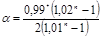 |
|
|
при измерении усилия в обегающей ветви грузового полиспаста |
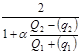 |
где n - число рабочих ветвей грузового полиспаста; К - номер обегающей ветви |
|
|
4 |
Отсутствие системы балансировки и контроля с помощью приборов: |
В начальный момент проекция центра массы монтируемого аппарата на горизонтальную плоскость (точка 0) лежит внутри треугольника А1 В1 В2 (А1 В1 В2). 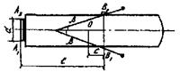 Формулы справедливы при Кн=2. Если такелажные средства не допускают перегрузки с коэффициентом Кн, вычисленным по этим формулам, то при монтаже необходимо осуществлять балансировку или контроль за усилием в оснастке: А1 А2 - опорная база аппарате (A1 A2 = d); В1 В2 - проекции монтажных штуцеров на горизонтальную плоскость (В1 В2 = d); l - расстояние между прямыми А1 А2 и В1 В2; с - расстояние от точки 0 до прямой В1 В2; a - угол отклонения грузовых полиспастов от вертикали; h - расстояние от оси монтажных штуцеров до горизонтальной плоскости, проходящей через прямую А1 А2; b - угол между проекциями на горизонтальную плоскость продольной оси аппарата и направлением грузового полиспаста |
|
|
подъем методом поворота вокруг шарнира с открытой осью |
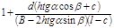 |
||
|
подъем методом скольжения до отрыва монтируемого аппарата от земли |
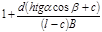 |
||
|
подъем метолом скольжения после отрыва монтируемого аппарата от Земли |
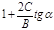 |
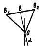 0 - центр тяжести аппарата; В1; В2 - монтажные штуцера a - угол отклонения оси аппарата от вертикали В1В2=В, В1В=ВВ2 ОВ=С |
|
|
подъем аппарата с помощью траверсы, у которой точки подвеса не расположены на одной прямой с точкой подвеса груза |
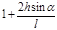 |
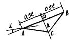 А, В - точки подвеса траверсы; С - точка подвеса груза; a - угол перекоса траверсы; АВ = l ; ДС = h |
|
Приложение 3
СХЕМА ИСПЫТАНИЙ ТАКЕЛАЖНЫХ СРЕДСТВ
Схема испытаний комплекта мачт в горизонтальном положении
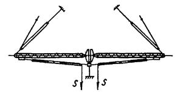
где S - усилие в сбегающей нити полиспаста
Черт. 1
Схема испытаний комплекта мачт в вертикальном (рабочем) положении
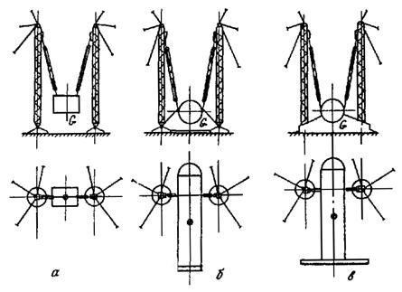
а - контрольным грузом; б - монтируемым аппаратом при закреплении аппарата к мачтам с контролем за величиной испытательной нагрузки; в - поочередное испытание мачт монтируемым аппаратом за счет консольного опирания низа аппарата; G - масса груза (аппарата)
Черт. 2
Приложение 4
СХЕМЫ ПОДЪЕМА АППАРАТОВ ПРИ МОНТАЖЕ МЕТОДОМ (СПОСОБОМ) СКОЛЬЖЕНИЯ
1. МЕТОД СКОЛЬЖЕНИЯ С ОТРЫВОМ ОПОРЫ АППАРАТА ОТ ЗЕМЛИ
1.1. Одиночное грузоподъемное средство стрелового крана
Схема установки аппарата в проектное положение
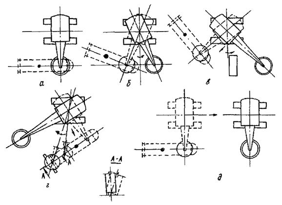
а - подъемом крюка крана (аппарат выложен над фундаментом, высота фундамента с учетом высоты неразъемных фундаментных болтов не более 1м); б - подъемом крюка и поворотом стрелы крана (аппарат выложен в стороне от фундамента, высота фундамента более 1м); в - подъемом крюка, поворотом и изменением вылета стрелы крана (имеются помехи); г - подъемом крюка, поворотом и изменением вылета стрелы крана при условии нахождения опорной части аппарата на достаточно мягком основании (масса аппарата не более 50 т при грузоподъемности крана, превышающей массу аппарата на 10%); д - подъемом крюка, поворотом и изменением вылета стрелы при передвижении крана
Черт. 1
Схема установки аппарата в проектное положение с помощью такелажного средства
а - подъем грузовым полиспастом (аппарат выложен над фундаментом, высота фундамента с учетом высоты неразъемных фундаментных болтов не более 1м); б - подъем грузовым полиспастом и поворотом мачты (аппарат выложен в стороне от фундамента, высота фундамента более 1м); в - подъем газовым полиспастом, поворотом и наклоном мачты (при наличии помех); г - подъем грузовым полиспастом, поворотом и наклоном мачты с промежуточной установкой аппарата на фундамент и перемещением мачты на другую стоянку без груза
Черт. 2
Схемы строповки аппарата
а - за верхний технологический штуцер (при разрешении проектировщика аппарата); б - за строповочные устройства с использованием распорной траверсы; в - застроповочные устройства при отсутствии касания стропом корпуса аппарата
Черт. 3
Схемы строповки и перемещения низа аппарата
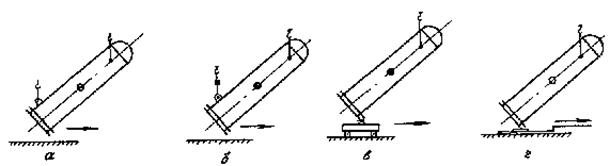
а - строповка и перемещение низа аппарата одним краном; б - строповка и перемещение низа аппарата спаренными кранами через балансирную траверсу; в - подтаскивание низа аппарата на тележке; г - подтаскивание низа аппарата на санях
Черт. 4
1.2. Спаренные грузоподъемные средства
Схема установки аппарата в проектное положение стреловыми кранами
а - подъемом крюков кранов (аппарат выложен над фундаментом, высота фундамента о учетом высоты неразъемных фундаментных болтов не более 1м); б - подъемом крюков, поворотом и изменением вылета стрелы кранов (аппарат выложен в стороне от фундамента, высота фундамента более 1м); в - подъемом крюков о последующим передвижением кранов
Черт. 5
Схема установки аппарата в проектное положение с помощью такелажных средств
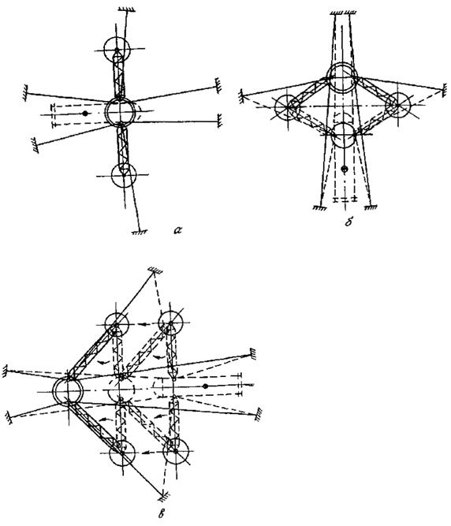
а - подъем грузовыми полиспастами (аппарат выложен над фундаментом, высота фундамента с учетом высоты неразъемных фундаментных болтов не более 1 м); б - подъем грузовыми полиспастами и наклоном мачт (аппарат выложен в стороне от фундамента, выпота фундамента более 1 м); в - подъем грузовыми полиспастами, поворот и наклон мачт о промежуточной установкой аппарата на фундамент и передвижением мачт на другую стоянку без груза
Черт. 6
Схемы строповки аппарата
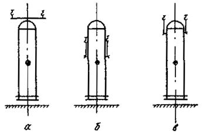
а - за верхний технологический штуцер (при разрешении организации проектировщика аппарата); б, в - застроповочные устройства
Черт. 7
Примечание. Схемы строповки и перемещения низа аппарата спаренными грузоподъемными средствами аналогичны схеме строповки и перемещения низа аппарата выполненной в соответствии с черт. 4.
2. МЕТОД СКОЛЬЖЕНИЯ БЕЗ ОТРЫВА ОПОРЫ АППАРАТА ОТ ЗЕМЛИ
2.1. Одиночное грузоподъемное средство
Стреловой кран
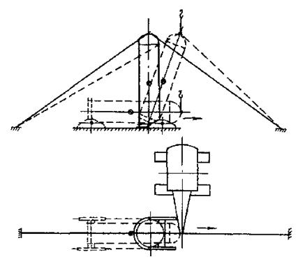
Черт. 8
Аппарат устанавливается в проектное положение подъемом крюка крана с последующим дотягиванием и удержанием его в процессе опускания на фундамент.
Такелажное средство
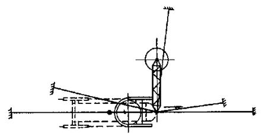
Черт. 9
Аппарат устанавливается в проектное положение с помощью грузового полиспаста с последующим дотягиваниом или удержанием аппарата (в зависимости от положения средства) в процессе опускания на фундамент.
Схемы строповки аппарата
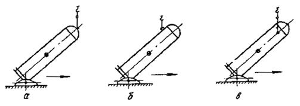
а - за верхний технологический штуцер (при разрешении проектировщика аппарата), б - за строповочное устройство, установленное на верхней образующей аппарата; в - за строповочные устройства с использованием распорной траверсы
Черт. 10
Схемы перемещения низа аппарата
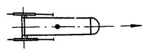
Черт. 11
Опорная часть аппарата шарнирно закреплена на санях ми тележках, охватывающих низ поднимаемого аппарата.
Схемы крепления тормозной системы
а - за верхний технологический штуцер (при условии обеспечения его прочности); б - за строповочные устройства
Черт. 12 Схемы крепления дотягивающей системы
а - за верхний технологический штуцер (при разрешении проектировщика аппарата); б - за строповочные устройства
Черт. 13
2.2. Спаренные грузоподъемные средства
Стреловые краны
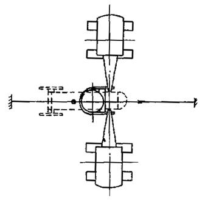
Черт. 14
Аппарат устанавливается в проектное положение подъемом крюков кренов с последующим дотягиванием и удержанием его в процессе опускания на фундамент.
Такелажные средства
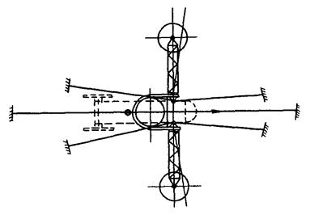
Черт. 15
Аппарат устанавливается в проектное положение с помощью грузовых полиспастов с последующим дотягиванием или удержанием аппарата (в зависимости от положения средств) в процессе опускания на фундамент.
Схемы строповки аппарата
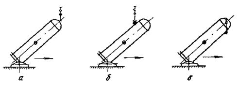
а - за верхний технологический штуцер (при условии обеспечения его прочности) с использованием балансирной траверсы; б - за строповочное устройство, установленное на верхней образующей аппарата с использованием балансирной траверсы; в - за строповочное устройство, расположенное по нижней образующей аппарата с использованием балансирной траверсы
Черт. 16
Примечания:
1. Схема перемещения низа аппарата при подъеме спаренными грузоподъемными средствами аналогична схеме перемещения низа аппарата, выполненной в соответствии с черт. 11.
2. Схема крепления тормозной системы при подъеме спаренными грузоподъемными средствами аналогична схеме крепления тормозной системы при подъеме одиночным средством, выполненной в соответствии с черт. 12.
3. Схема крепления дотягивающей системы при подъеме спаренными грузоподъемными средствами аналогична схеме крепления дотягивающей системы при подъеме одиночным средством, выполненной в соответствии с черт. 13.
Приложение 5
СРЕДСТВА, РЕКОМЕНДУЕМЫЕ ДЛЯ ИСПОЛЬЗОВАНИЯ ПРИ ПЕРЕМЕЩЕНИИ НИЗА АППАРАТА В ЗАВИСИМОСТИ ОТ ВЕЛИЧИН ДЕЙСТВУЮЩИХ НАГРУЗОК
Нагрузка, действующая
на опорную часть аппарата, тс Рекомендуемые средства
До 30 Подкладной лист, сани, одиночные или спаренные краны
От 31 до 50 Сани, одиночные или спаренные краны
От 51 до 100 Одиночные или спаренные краны
От 101 до 200 Одиночные или спаренные краны, тележка по рельсовому пути
Свыше 201 Тележка и сани по рельсовому пути
Приложение 6
СХЕМЫ ПОДЪЕМА АППАРАТОВ МЕТОДОМ ПОВОРОТА ВОКРУГ ШАРНИРА
1. МЕТОД (СПОСОБ) ПОВОРОТА ВОКРУГ ШАРНИРА ГРУЗОПОДЪЕМНЫМИ СРЕДСТВАМИ
1.1. Одиночным стреловым краном
Схема установки аппарата в проектное положение
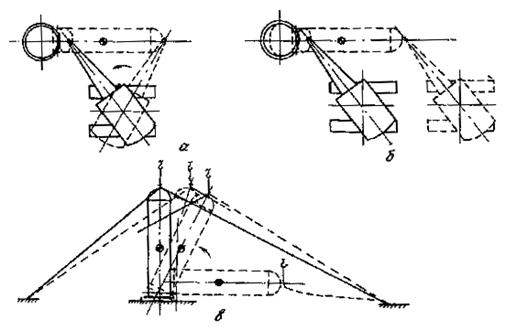
а, в - подъемом крюка, поворотом и изменением вылета стрелы крана с последующим удержанием аппарата тормозной системой, а при необходимости дотягивания аппарата, установкой и работой дотягивающей системы; б, в - подъемом крюка и передвижением крана с последующим удержанием аппарата тормозной системой, а при необходимости дотягивания аппарата, установкой и работой дотягивающей системы
Черт. 1
Схемы строповки аппаратов
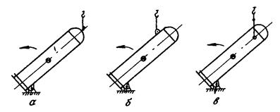
а - за верхний технологический штуцер (при разрешении проектировщика); б - за строповочное устройство, установленное на верхней образующей; в - за строповочные устройства с использованием распорной траверсы
Черт. 2
1.2. Спаренными стреловыми кранами
Схема установки аппарата в проектное положение
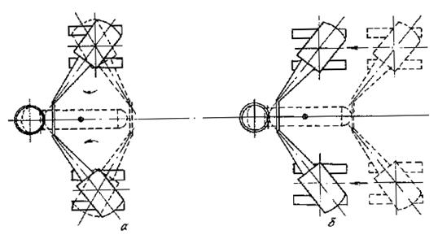
а - подъемом крюков, поворотом и изменением вылета стрел кранов с последующим торможением, а при необходимости с дотягиванием; б - подъемом крюков и передвижением крана с последующим торможением, а при необходимости с дотягиванием
Черт. 3
Схемы строповки аппарата
а - за верхний технологический штуцер (при условии обеспечения его прочности) с использованием балансирной траверсы; б - за строповочное устройство, установленное на верхней образующей аппарата, с использованием балансирной траверсы, в - за строповочное устройство, установленное на нижней образующей аппарата, с использованием балансирной траверсы; г - за строповые устройства при нормированной с помощью тарированного груза грузоподъемности крана, имеющего меньшую высоту подъема крюка
Черт. 4
Схемы установки шарнирных устройств
а - на фундаменте; б - на разрезной опоре
Черт. 5
Примечания: 1. Схема строповки аппарата спаренными кранами аналогична схеме строповок одиночным краном, выполненной в соответствии с черт. 4.
2. Схема крепления тормозной системы при подъеме спаренными грузоподъемными кранами аналогична схеме крепления тормозной системы при подъеме одиночным краном, выполненной в соответствии с черт. 12.
3. Схема крепления дотягивающей системы при подъеме спаренными грузоподъемными средствами аналогична схеме крепления дотягивающей системы при подъеме одиночным краном, выполненной в соответствии с черт. 13 приложения 5.
2. МЕТОД ПОВОРОТА ВОКРУГ ШАРНИРА КРАНАМИ С ПОМОЩЬЮ ОПОРНОЙ СТОЙКИ
Схема установки аппарата в проектное положение одиночным стреловым краном или спаренными стреловыми кранами
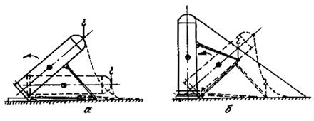
а - установка аппарата на опорную стойку; б - подъем аппарата с помощью опорной стойки
Черт. 6
Схемы прикрепления опорной стойки к аппарату
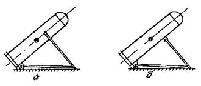
а - за строповочные устройства, установленные на боковых образующих; б - за строповочное устройство, установленное на нижней образующей
Черт. 7
Примечания: 1. Схема установки шарнирных устройств аналогична схеме установки шарнирных устройств при методе поворота вокруг шарнира грузоподъемными средствами, выполненной в соответствии с черт. 5.
2. Схема строповки аппарата при его установке на опорную стойку аналогична схеме строповки при методе поворота вокруг шарнира грузоподъемными средствами, выполненной в соответствии с черт. 4.
3. Схема крепления тормозной системы аналогична схеме крепления тормозной системы при методе скольжения без отрыва опоры аппарата от земли, выполненной в соответствии с черт. 12 приложения 5.
3. МЕТОД ПОВОРОТА ВОКРУГ ШАРНИРА ВЫЖИМАНИЕМ
Схема подъема аппарата
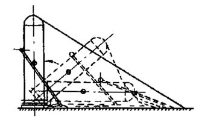
Черт. 8
Аппарат устанавливается в проектное положение за счет подтаскивания нижней части опорной конструкции и удержания его в процессе опускания на фундамент.
Схема прикрепления опорной конструкции к аппарату
а - за строповочное устройство, установленное на верхней образующей; б - за строповочные устройства, установленные на боковых образующих; в - за сроповочное устройство, установленное на нижней образующей
Черт. 9
Примечания: 1. Схема установки шарнирных устройств аналогична схеме установки шарнирных устройств при методе поворота вокруг шарнира грузоподъемными средствами, выполненной в соответствии с черт. 5.а.
2. Схема крепления тормозной системы аналогична схеме крепления тормозной системы при методе скольжения без отрыва от земли опоры аппарата, выполненный в соответствии с черт. 12 приложения 5.
4. МЕТОД ПОВОРОТА ВОКРУГ ШАРНИРА С ПОМОЩЬЮ ГИДРОПОДЪЕМНИКА
Схема установки гидроподъемника
Черт. 10
Примечания: 1. Схема прикрепления опорной конструкции к аппарату аналогична схеме прикрепления опорной конструкции к аппарату при методе поворота вокруг шарнира выжиманием, выполненной в соответствии с черт. 9,в.
2. Схема установки шарнирных устройств аналогична схеме установки шарнирных устройств при методе поворота вокруг шарнира грузоподъемными средствами, выполненной в соответствии с черт. 5.
3. Схема крепления тормозной системы аналогична схеме крепления тормозной системы при методе скольжения без отрыва опоры аппарата от земли, выполненной в соответствии с черт. 12 приложения 5.
5. МЕТОД ПОВОРОТА ВОКРУГ ШАРНИРА С ПОМОЩЬЮ ПАДАЮЩЕГО ШЕВРА
Схема подъема аппарата
Черт. 11
Примечания: 1. Схема установки шарнирных устройств аналогична схеме установки шарнирных устройств при методе поворота вокруг шарнира грузоподъемными средствами, выполненной в соответствии с черт. 5,а.
2. Схема строповки аппарата аналогична схеме строповки при методе поворота вокруг шарнира грузоподъемными средствами по черт. 2 и 3, без распорной траверсы, выполненной в соответствии с черт. 2, б, в.
3. Схема крепления тормозной системы аналогична схеме крепления тормозной системы при методе скольжения без отрыва опоры аппарата от земли, выполненной в соответствии с черт. 12 приложения 5.
6. БЕЗЪЯКОРНЫЙ СПОСОБ
Схема подъема аппарата
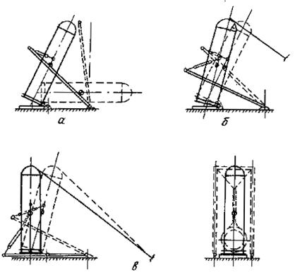
а - подъем аппарата до положения неустойчивого равновесия; б - перевод аппарата через положение неустойчивого равновесия и удержание его тормозной системой; в - опускание аппарата в проектное положение
Черт. 12
Примечания: 1. Схема установки шарнирных устройств аналогична схеме установки шарнирных устройств при методе поворота вокруг шарнира грузоподъемными средствами, выполненной в соответствии с черт. 5,а.
2. Схема строповки аппарата аналогична схеме строповки при методе поворота вокруг шарнира грузоподъемными средствами без распорной траверсы, выполненной в соответствии с черт. 2, б, в.
3. Схема крепления тормозной системы аналогична схеме крепления тормозной системы при методе скольжения без отрыва опоры аппарата от земли, выполненной в соответствии с черт. 12 приложения 5.
Приложение 7
Рекомендуемое
ФОРМЫ ПРОИЗВОДСТВЕННОЙ ДОКУМЕНТАЦИИ (АКТЫ)
|
Форма 1 АКТ ПРИЕМКИ ПЛОЩАДКИ ПРОИЗВОДСТВА РАБОТ Монтаж ___________________________________________________________________, (наименование аппарата) выполненного в _____________________________________________________________ (наименование и место расположения объекта) «___»_______________,19________г. (дата приемки) Комиссия в составе: представителя строительной организации ______________________________________ (фамилия, инициалы, должность) представителя заказчика _____________________________________________________ (фамилия, инициалы, должность) представителя монтажной организации ________________________________________ (фамилия, инициалы, должность) произвела осмотр конструкций и проверку качества работ, выполненных ___________________________________________________________________________, (наименование строительно-монтажной организации) и составила настоящий акт о нижеследующем: 1. К приемке предъявлены следующие площадки: ___________________________________________________________________________ (перечень и краткая характеристика площадки) 2. Работы выполнены _____________________________________________________ (именование проектной организации, проектной документации, номера чертежей и дата составления) 3. При выполнении работ отсутствует проектная документация _________________ __________________________________________________________________________ (ненужное зачеркнуть, при наличии отклонения указывается, кем согласованы, номера чертежей и дата согласования) 4. Дата: начала работ _____________________________________________________ окончания работ __________________________________________________ РЕШЕНИЕ КОМИССИИ Работы выполнены в соответствии с ________________________________________ __________________________________________________________________________ (проектной документацией, стандартами, строительными нормами и правилами) На основании изложенного разрешается производство следующих работ по монтажу __________________________________________________________________________ __________________________________________________________________________ (именование аппаратов) Представитель строительной организации ________________________________ (подпись) (и.о. фамилия) Представитель заказчика ________________________________ (подпись) (и.о. фамилия) Представитель монтажной организации ________________________________ (подпись) (и.о. фамилия) Приложение. Исполнительная схема площадки с указанием методов проверки и подписями участников проверки. Форма 2 АКТ ГОТОВНОСТИ ПУТИ ДЛЯ ПЕРЕМЕЩЕНИЯ __________________________________________________________________________, (наименование аппарата) выполненного в _____________________________________________________________ (наименование и место расположения объекта) «___»_______________, 19 ______г. (дата приемки) Комиссия в составе: представителя монтажной организации _________________________________________ (фамилия, инициалы, должность) представителя строительной организации _______________________________________ (фамилия, инициалы, должность) представителя заказчика ______________________________________________________ (фамилия, инициалы, должность) представителя монтажной организации _________________________________________ (фамилия, инициалы, должность) произвела осмотр пути перемещения аппарата, выполненного _____________________ ___________________________________________________________________________, (наименование организации) и составила настоящий акт о нижеследующем. 1. К приемке предъявлены следующие конструкции: ___________________________________________________________________________ (перечень и краткая характеристика конструкций) 2. Работы выполнены _____________________________________________________ ___________________________________________________________________________ (наименование проектной организации, проектной документации, номера чертежей и дата составления) 3. При выполнении работ отсутствуют (допущены) отклонения от проектной документации ______________________________________________________________ ___________________________________________________________________________ (ненужное зачеркнуть, при наличии отклонения указывается, кем согласованы, номера чертежей и дата согласования) ___________________________________________________________________________ 4. Дата: начала работ ______________________________________________________ окончания работ __________________________________________________ РЕШЕНИЕ КОМИССИИ Работы выполнены в соответствии с _________________________________________ ___________________________________________________________________________ (проектной документацией, стандартами, строительными нормами и правилами) На основании изложенного разрешается производство следующих работ по монтажу __________________________________________________________________________ __________________________________________________________________________ (наименование аппаратов) Представитель строительной организации ________________________________ (подпись) (и.о. фамилия) Представитель заказчика ________________________________ (подпись) (и.о. фамилия) Представитель монтажной организации ________________________________ (подпись) (и.о. фамилия) АКТ ГОТОВНОСТИ АППАРАТА К ПОДЪЕМУ ___________________________________________________________________________, (наименование аппарата) выполненного в _____________________________________________________________ (наименование и место расположения объекта) «___»_______________,19 ____г. (дата приемки) Комиссия в составе: представителя монтажной организации _________________________________________ ___________________________________________________________________________ (фамилия, инициалы, должность) представителя технического надзора разработчика ППР ___________________________ ___________________________________________________________________________ (фамилия, инициалы, должность) составила настоящий акт о нижеследующем: ___________________________________________________________________________ (наименование аппарата, номер чертежа, завод-изготовитель, номер по плану) ___________________________________________________________________________ имеющий (ая) подъемную массу ____________т (см. приложения 1, 2, 3), к подъему готов (а) в соответствии с проектом производства работ. Приложения: 1. Справка о фактической подъемной массе аппарата. 2. Справка об отсутствии в аппарате воды после гидроиспытания. 3. Справка о проведении осмотра аппарата перед подъемом. (подпись) (и.о. фамилия) (подпись) (и.о. фамилия) Приложение 1 к акту (форма 3) СПРАВКА _____________________________________________________ (наименование аппарата, номер по плану) ____________________________________________________________
Итого: Фактическая подъемная масса аппарата составляет ............. т. Справку составил ________________________________________________________ (представитель монтажной организации, ___________________________________________________________________________________ фамилия, инициалы, должность) (подпись) «___»____________________ 19__г. Приложение 2 к акту (форма 3) СПРАВКА _________________________________________________осмотрен(а) после проведения (наименование аппарата, номер по плану) гидравлического испытания. Вода не обнаружена. Справку составил ________________________________________________________ (представитель монтажной организации, ___________________________________________________________________________________ фамилия, инициалы, должность) (подпись) «___»____________________ 19__г. Приложение 3 к акту (форма 3) СПРАВКА О ПРОВЕДЕНИИ ОСМОТРА АППАРАТА ___________________________________________________________________________ (наименование аппарата, номер по плану) перед подъемом. Справку составил ________________________________________________________ (представитель ___________________________________________________________________________________ монтажной организации, фамилия, инициалы, ___________________________________________________________________________________ должность) (подпись) «___»____________________ 19__г. Форма 4 АКТ «___»____________________ 19__г. ___________________________________________________________________________ (стройка, ее местонахождение, здание, сооружение, цех, установка) Представители монтажной организации ___________________________________________________________________________ (должность, фамилия, инициалы) ___________________________________________________________________________ ___________________________________________________________________________ и технадзора за соблюдением ППР ___________________________________________________________________________ (должность, фамилия, инициалы) составили акт о проведении испытаний следующих грузоподъемных средств.
Заключение ___________________________________________________________________________ (грузоподъемные средства) ___________________________________________________________________________ ___________________________________________________________________________ _______________________________________________________испытания выдержали. (подпись) (и.о. фамилия) (подпись) (и.о. фамилия) (подпись) (и.о. фамилия) Форма 5 АКТ «___»____________________ 19__г. ___________________________________________________________________________ (стройка, ее местонахождение, здание, сооружение, цех, установка) ___________________________________________________________________________________ Представители монтажной организации _____________________________________ (должность, фамилия, инициалы) ___________________________________________________________________________ ___________________________________________________________________________ ___________________________________________________________________________ и технадзора за соблюдением ППР _____________________________________________ (должность, фамилия, инициалы) составили акт о проведении осмотра и проверки следующих контрольно-измерительных приборов.
Заключение Контрольно-измерительные приборы ___________________________________________________________________________ ___________________________________________________________________________ готовы к работе. Приложения: 1. Паспорта приборов с отметкой об освидетельствовании. 2. Таблицы результатов испытаний. (подпись) (и.о. фамилия) (подпись) (и.о. фамилия) Форма 6 АКТ «___»____________ 19 ___г. ___________________________________________________________________________ (стройка, ее местонахождение, здание, сооружение, цех, установка) ___________________________________________________________________________ Представители монтажной организации _____________________________________ (должность, фамилия, инициалы) ___________________________________________________________________________ ___________________________________________________________________________ ___________________________________________________________________________ составили акт о проведении апробирования ЦДПУ. Заключение Централизованный дистанционный пульт управления признан готовым к работе. (подпись) (и.о. фамилия) (подпись) (и.о. фамилия) Форма 7 АКТ «___»____________ 19 ___г. ___________________________________________________________________________ (стройка, ее местонахождение, здание, сооружение, цех, установка) Представители монтажной организации _____________________________________ ___________________________________________________________________________ (должность, фамилия, инициалы) ___________________________________________________________________________ ___________________________________________________________________________ и технадзора организации – разработчика ППР ___________________________________________________________________________ (должность, фамилия, инициалы) ___________________________________________________________________________ ___________________________________________________________________________ ___________________________________________________________________________ составили акт о следующем: якорное устройство (номер по схеме, усилие) выполнено в соответствии с ___________________________________________________________________________ (номер чертежа, наименование организации - разработчика ППР) и готово к производству испытаний. Приложение. Исполнительная схема якорного устройства с указанием характеристик грунта в месте его установки (подпись) (и.о. фамилия) (подпись) (и.о. фамилия) Форма 8 АКТ «___»____________ 19 ___г. ___________________________________________________________________________ (стройка, ее местонахождение, здание, сооружение, цех, установка) ___________________________________________________________________________ Представители монтажной организации _____________________________________ (должность, фамилия, инициалы) ___________________________________________________________________________ ___________________________________________________________________________ ___________________________________________________________________________ ___________________________________________________________________________ ___________________________________________________________________________ составили акт об апробировании следующих средств связи: ___________________________________________________________________________
Заключение ___________________________________________________________________________ (наименование средств связи) ___________________________________________________________________________ ___________________________________________________________________________ _______________________________________________________испытания выдержали. (подпись) (и.о. фамилия) (подпись) (и.о. фамилия) ПОДЪЕМ РАЗРЕШАЮ Главный инженер монтажного управления «____»_____________19____г. АКТ «___»_________________19__г. ___________________________________________________________________________ (стройка, ее местонахождение, здание, сооружение, цех, установка) ___________________________________________________________________________ Представители монтажной организации ________________________________________ ___________________________________________________________________________ (должность, фамилия, инициалы) ___________________________________________________________________________ ___________________________________________________________________________ и технадзора за соблюдением ППР ___________________________________________________________________________ (должность, фамилия, инициалы) ___________________________________________________________________________ ___________________________________________________________________________ составили настоящий акт о нижеследующем: произведены осмотр ________________________________________________________ (наименование грузоподъемного средства, номер паспорта) и ревизия прилагаемых к настоящему акту документов. Заключение Грузоподъемного средство готово к подъему в соответствии с проектом производства работ _____________________________________________________________________ (номер работы, наименование ___________________________________________________________________________ проектной организации) Приложения: 1. Перечень документов, прилагаемых к акту готовности грузоподъемного средства к работе. 2. Схема расстановки технического персонала при подъеме аппарата (аксонометрия или план) (подпись) (и.о. фамилия) (подпись) (и.о. фамилия) (подпись) (и.о. фамилия) |
|||||||||||||||||||||||||||||||||||||||||||||||||||||||||||||||||||||
Приложение 1 к акту
(форма 9)
ПЕРЕЧЕНЬ ДОКУМЕНТОВ, ПРИЛАГАЕМЫХ К АКТУ ГОТОВНОСТИ ГРУЗОПОДЪЕМНОГО СРЕДСТВА К ПОДЪЕМУ АППАРАТА
1. ППР (технологическая карта) на монтаж аппарата.
2. Паспорт грузоподъемного средства и механизмов с отметкой об освидетельствовании.
3. Акт испытания грузоподъемного средства, если оно проводилось.
4. Акт готовности аппарата к подъему.
5. Акт приемки площадки производства работ.
6. Акт готовности пути перемещения.
7. Акт на работы по устройству якорей.
8. Акт проверки контрольно-измерительных приборов.
9. Акт об апробировании средств связи.
10. Акт об апробировании централизованного дистанционного пульта управления.
11. Сертификаты на материалы, применяемые в конструкциях и элементах оснастки.
12. Сертификаты на канаты.
13. Акты на заплетку концов канатов такелажной оснастки (если такие работы проводились).
14. Справка бюро прогнозов о предстоящей в день подъема погоде и силе ветра.
15. Инструкция по конкретным правилам техники безопасности с отметкой об ознакомлении всех участников подъема в журнале инструктажа.
16. Инструкция об обязанностях технического персонала, осуществляющего подъем, с отметкой об ознакомлении.